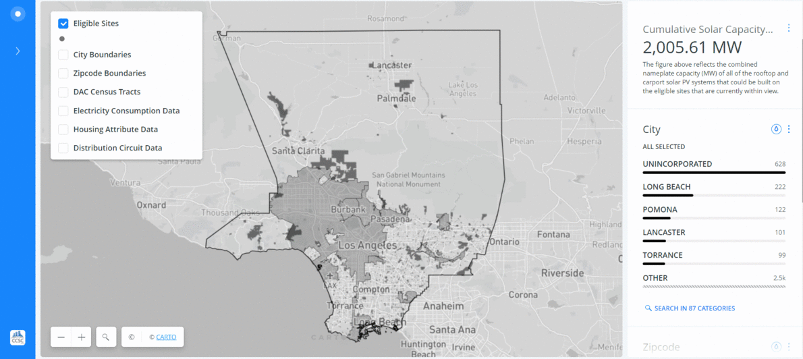
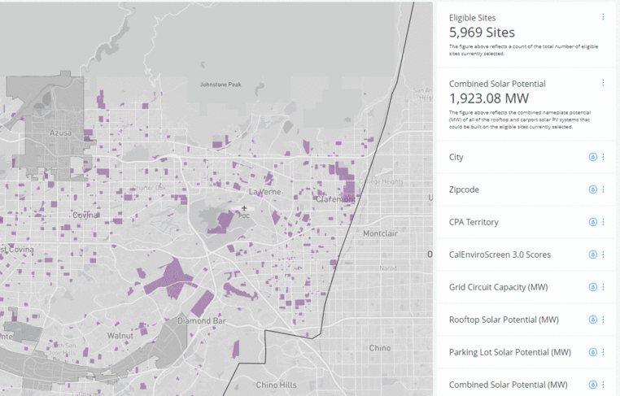
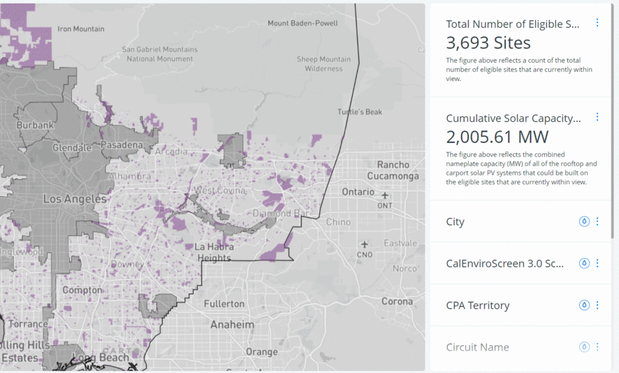
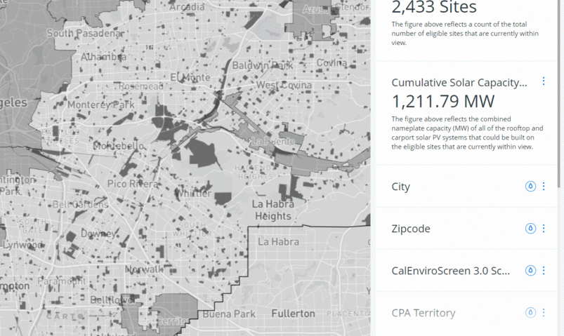
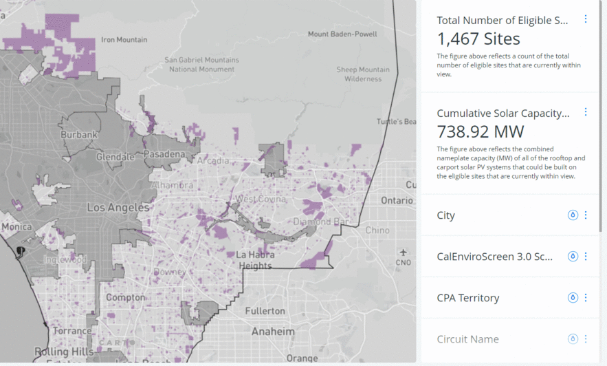
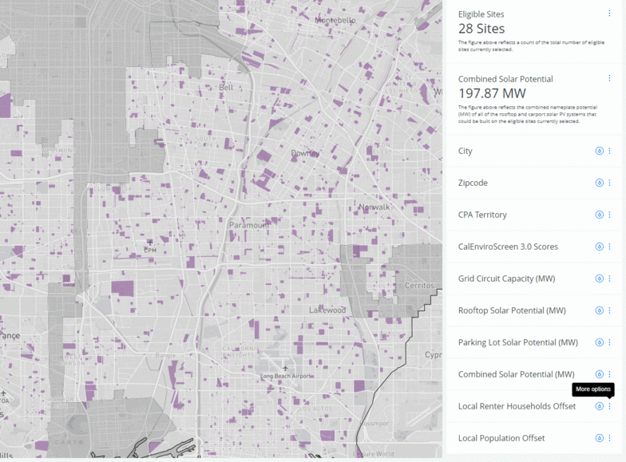

Where are opportunities to install community solar?
Find eligible sites for community solar in your city with this map tool.
Panels on the right side of the map help filter and narrow locations based on criteria important to your solar installation site.
Tutorials are provided below to help you get started:
- To focus the map on your city of interest, type your city in the search bar, located in the bottom left corner of the map or zoom into your city on the map.
- Open the City widget. Click "Search in 87 Categories." Type your city in the search bar.
- Once it appears in the list, click the check box to the left. Click Apply in the upper-left corner of the widget.
Now, only eligible sites within your city are shown on the map. Other widgets will reflect this filter. You can now see the distribution of other available datasets for sites located only in your city. Because filters are added cumulatively, making a selection in an additional widget will further refine the selected sites.
To undo your selection, click “Unlock” in the widget.
- Scroll to and open the "CPA Territory" widget.
- Eligible sites are divided into two categories: true where the site is located within CPA territory, and false where it is outside CPA territory.
- Click "true." Now, only eligible sites within CPA territory are shown on the map. Filtering with additional widgets will further refine your selected sites.
To undo this step, click "All" within the CPA Territory widget.
- Scroll to and open the "Sufficient Circuit Capacity" widget.
- Eligible sites are divided into two cateogires: true where the site has sufficient circuit capacity, and false where it does not.
- Click "true." Now, only eligible sites with sufficient circuit capacity are shown on the map. Filtering with additional widgets will further refine your selected sites.
To undo this step, click "All" within the Sufficient Circuit Capacity widget.
- Scroll to and open the Combined Capacity Potential (MW) widget.
- A histogram shows the distribution of combined capacity potential (MW) in each eligible site shown on the map.
- Click on the histogram and two range bars appear. Drag the bars to capture the highest range of values or the values you are most interested in.
- Now, only eligible sites with a combined capacity potential within the range you have set in the histogram are available. Filtering with additional widgets will further refine your selected sites.
To undo this step, click "Clear" within the Combined Capacity Potential widget. To see a histogram of just your selected values, click "Zoom."
- Go to the legend on the left side of the map. Click the check box next to "DAC Census Tracts." This layer is provided as an overview of the DAC Census Tracts in Los Angeles County.
- Scroll to and open the "CalEnviroscreen 3.0 Scores" widget. This widget filters eligible sites based on the CalEnviroscreen score of the census tract it is located within.
- Click the histogram and two range bars appear. Drag the bars to capture the eligible sites with a CalEnviroscreen score between 75 and 100. The eligible sites now overlap with the DAC Census Tract layer available in the legend.
- Turn off the "DAC Census Tracts" layer. Click the rain drop above the histogram to apply the color style. Now only eligible sites located in a census tract with a CalEnviroscreen score between 75 and 100 are available and colored gradiently by score. Filtering with additional widgets will further refine your selected sites.
To undo this step, click "Clear" within the CalEnviroscreen 3.0 Scores widget. Click the raindrop to undo the color style.

- Scroll down to the "Local Population Offset" widget and open it.
- A histogram shows the distribution of total population within each eligible site.
- Click on the histogram and two range bars appear. Drag the bars to capture the highest range of population or the range you are most interested in.
- Now, only eligible sites with a population within the range you've set are available. Filtering with additional widgets will further refine your selected sites.
To undo this step, click "Clear" within the Local Population Offset widget. To see a histogram of just the sites you've selected, click "Zoom."
- Go to the legend on the left side of the map. Click the check box next to the "Housing Attribute Data" layer. This layer is provided as an overview of the percentage of renters in each census tract.
- Scroll to and open the "Local Renter Household Offset" widget. This widget filters eligible sites based on the percentage of renters in the census tract it is located within.
- Click the histogram and two range bars appear. Drag the bars to capture the eligible sites within the highest range of percent renters.
- Now, only eligible sites with a percentage of renters within the range you have selected are visible on the map. Filtering with additional widgets will further refine your selected sites.
To undo this step, click "Clear" within the Local Renter Househoold Offset widget. Too see a histogram of just the sites you've selected, click "Zoom."
